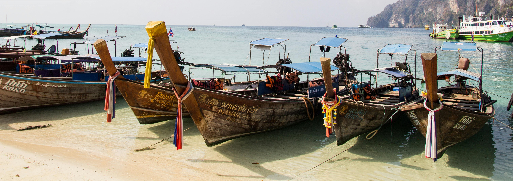

Explore our Marina

Topsail Beach’s marina is a jewel of the coast, offering boaters a tranquil haven to dock their vessels. With its well-maintained piers
and comprehensive facilities, it’s a popular spot for both seasoned sailors and casual cruisers. The marina is a bustling hub of activity,
where fishing charters set off at dawn, and yachts return at sunset. It’s not just a place to moor your boat; it’s a community gathering
spot where stories of the sea are shared, and new journeys begin. Whether you’re provisioning for an offshore adventure or simply enjoying
the peaceful waterfront, the marina at Topsail Beach is the heart of maritime life.
Why Choose Our Marina?
Prime Location:
Situated where cerulean waters meet golden sands, our marina offers unrivaled access to the open sea. Whether you’re an avid sailor, a fishing enthusiast
, or simply seeking solace, our location is your compass point.
State-of-the-Art Facilities:
From slip rentals to yacht services, we’ve meticulously designed our facilities to cater to every need. Our expert staff ensures that your vessel is in
top condition, ready to set sail whenever the mood strikes.
Community and Camaraderie:
The marina isn’t just about boats; it’s about forging connections. Swap stories with fellow seafarers, share sunsets, and create memories that ebb and
flow like the tides.
Events and Gatherings:
Join us for sunset cruises, regattas, and beachside barbecues. Our marina hosts events that celebrate the sea, bringing together kindred spirits who
share a love for saltwater and starlit nights.